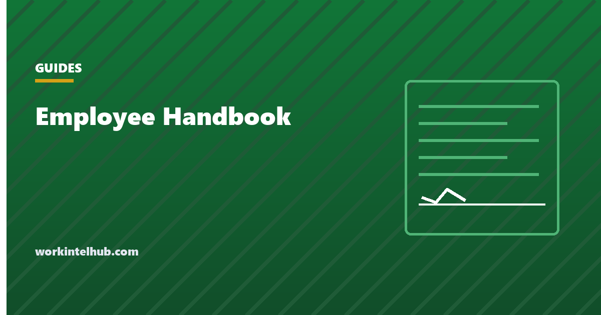

Employee Handbook

An employee handbook does two jobs. It tells people how things work here, and it records that they were told. The second job is why the disclaimer at the front and the acknowledgement at the back matter more than most of the content between them.
This page covers what belongs in one, the wording that protects you, and the rule that makes a surprising number of ordinary-sounding handbook clauses unenforceable.
What belongs in it
| Section | Why it is there |
|---|---|
| Disclaimer and at-will statement | Establishes that the handbook is not a contract |
| Equal opportunity and anti-harassment | Expected, and evidence of a policy if a complaint arises |
| Hours, pay and classification | Workweek, pay periods, overtime, exempt status |
| Time off | Leave types, accrual, how to request, carryover |
| Attendance | Notice expected, what is recorded, protected leave excluded |
| Conduct and IT use | What the equipment is for, and what is monitored |
| Safety and reporting | How to raise a concern, and that raising one is safe |
| Acknowledgement | Signed, dated, filed |
Some policies become mandatory at a size threshold rather than on day one. FMLA is the common example, applying at 50 or more employees, and several state requirements have their own counts. Check the thresholds against your headcount each year rather than once at founding.
The disclaimer and the acknowledgement
These are the two pieces that do legal work. The disclaimer goes at the front, before anyone reads the policies. The acknowledgement goes at the back and gets signed.
This handbook describes current policies and practices at [Company]. It is not a contract of employment and does not create one, express or implied. Employment is at will: either you or [Company] may end the employment relationship at any time, with or without notice and with or without cause, to the extent permitted by law. [Company] may change, add to, or withdraw any policy in this handbook at any time, with or without notice.
I have received the [Company] employee handbook dated [date]. I understand it describes current policies rather than terms of a contract, that my employment is at will, and that policies may change. I understand I am responsible for reading it and for asking [role] if anything is unclear.
Name: [ ] Signature: [ ] Date: [ ]
Two cautions. At-will employment is the default in most of the United States but not universally, and Montana is the well-known exception, so the wording should be checked against each state you employ in. And a disclaimer does not survive being contradicted elsewhere: a handbook that promises progressive discipline in fixed steps has arguably created the expectation the disclaimer denies.
The rule that makes ordinary clauses unenforceable
This is the part most handbook guidance omits, and it applies to non-union workplaces as much as union ones.
Section 7 of the National Labor Relations Act protects employees who act together over pay, hours and working conditions. The NLRB's current standard for workplace rules, from Stericycle, Inc. decided on 2 August 2023, makes a rule presumptively unlawful if it has a reasonable tendency to chill that activity, read from the perspective of an employee who is economically dependent on the employer and therefore inclined to read an ambiguous rule broadly.
Clauses that routinely fail that test are not exotic. They are the ordinary handbook furniture:
- "Do not discuss your salary with other employees."
- "Treat colleagues and the company with respect at all times."
- "Do not post anything that could damage the company's reputation."
- "Keep internal matters confidential."
Each reads, to an economically dependent employee, as covering complaints about pay and conditions. The pay one is the clearest: employees have a protected right to discuss compensation, and a rule forbidding it is unlawful on its face.
The fix is narrowing plus a savings clause: define the specific harm you are addressing, and state explicitly that nothing in the policy restricts the right to discuss wages, hours or working conditions. Our page on social media monitoring has defensible clause wording. Stericycle remained the operative standard as of 2026, though the Board regained a quorum in January 2026 and is widely expected to revisit it, so this is an area to check rather than to assume.
The monitoring section, and where it must not live
If you monitor anything, the handbook has to say so. Four sentences: what is collected, what is not, who can see it, and how long it is kept.
The important structural point is that a clause buried in the handbook is not notice in the states that require it. Delaware and New York require the employee to acknowledge the monitoring notice specifically, and an unsigned handbook does not satisfy that. 26 M.R.S. section 620-A goes further and requires written notice to employees at least once every calendar year, so a one-off handbook signature at hire does not discharge it.
Keep the monitoring notice as a separate acknowledged document and reference it from the handbook. Our monitoring policy template and acknowledgement form are built for that, and the state guide sets out which of the four states requires what.
Keeping it current
A handbook goes wrong slowly. Four habits prevent most of it.
- Date every version and keep the old ones. The version somebody signed is the one that governs their acknowledgement, and a live link that has been edited since proves nothing about what they agreed to.
- Re-acknowledge on material change, not annually as a ritual. A signature against last year's list does not cover a policy added since.
- Review against headcount thresholds each year. Crossing 50 employees changes your obligations without anyone sending a notice.
- Review against the states you employ in, which change as people relocate. Our remote work policy guide covers why location moves the obligations with the employee.
The single most common handbook failure is none of these. It is that the document describes a company that no longer exists, and everyone knows it, which quietly teaches people that written policy here is decorative.
Key takeaways
- A handbook does two jobs: tells people how things work, and records that they were told.
- The disclaimer at the front and the signed acknowledgement at the back are the parts doing legal work.
- A disclaimer does not survive being contradicted: promising progressive discipline in fixed steps creates the expectation it denies.
- Under the NLRB's Stericycle standard a rule is presumptively unlawful if it has a reasonable tendency to chill protected activity.
- Ordinary clauses fail that test, including confidentiality of pay, general respect requirements and reputation rules.
- Employees have a protected right to discuss their pay. A rule forbidding it is unlawful on its face.
- A monitoring clause buried in the handbook is not notice. Delaware and New York require specific acknowledgement, and Maine requires it annually.
- Date every version and keep the old ones, because the version somebody signed is the one that governs.
Frequently asked questions
What must be included in an employee handbook?
A disclaimer and at-will statement, equal opportunity and anti-harassment policies, hours pay and classification, time off, attendance, conduct and IT use, how to raise a concern, and a signed acknowledgement. Some policies become mandatory at a size threshold, FMLA at 50 or more employees being the common example.
Is an employee handbook a legal requirement?
No federal law requires a handbook itself, though individual policies within it are required in various circumstances and jurisdictions. The practical reason to have one is evidentiary: it records that people were told, which is what matters when a dispute arises.
What should the handbook disclaimer say?
That the handbook describes current policies rather than contract terms, that employment is at will and either party may end it, and that the employer may change any policy at any time. At-will is the default in most of the United States but not everywhere, so the wording should be checked against each state you employ in.
Can a handbook policy be unenforceable?
Yes. Under the NLRB's Stericycle standard, a workplace rule is presumptively unlawful if it has a reasonable tendency to chill employees from acting together over pay, hours or working conditions. This applies to non-union workplaces, and it catches ordinary wording about respect, reputation and confidentiality.
Can we tell employees not to discuss their salaries?
No. Discussing pay with colleagues is protected concerted activity under the National Labor Relations Act, and a handbook rule forbidding it is unlawful on its face. This is among the most common unenforceable clauses still found in handbooks.
Does a monitoring clause in the handbook count as notice?
Not in the states that require acknowledgement. Delaware and New York require the employee to acknowledge the monitoring notice, and an unsigned handbook does not satisfy that. Maine requires written notice at least once every calendar year, so a one-off signature at hire does not discharge it either.
How often should an employee handbook be updated?
Review annually against your headcount and the states you employ in, both of which change obligations without anyone notifying you. Re-acknowledge on material change rather than on a ritual annual cycle, since a signature against last year's policies does not cover one added since.